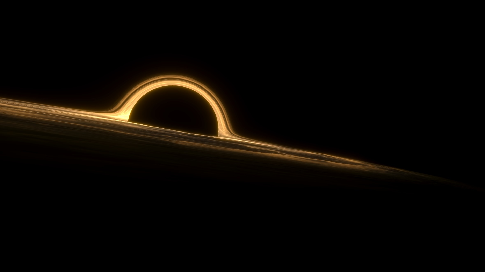
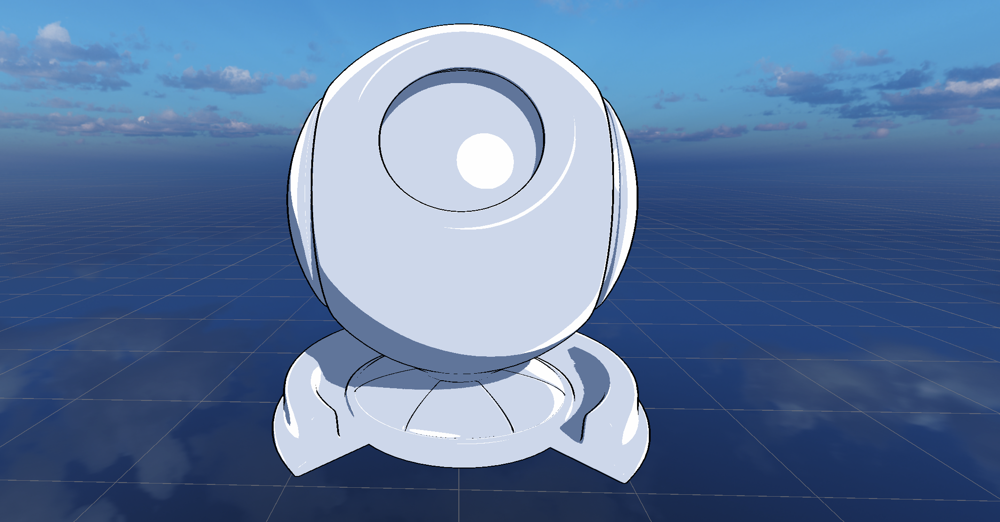
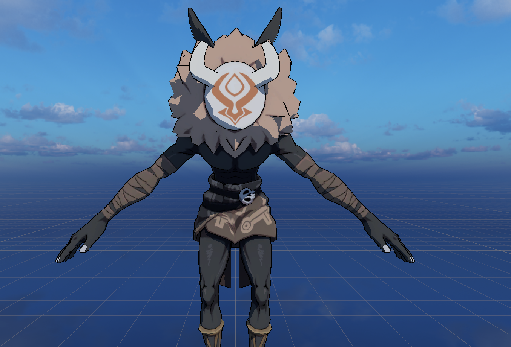

Here are a series of mini practices projects I made in Unity.
View the GitHub page here . Check out a short demo here .

A special effect to experiment on ray marching. The black hole is rendered without any mesh, but modeled using SDFs.


A cel shading/toon shading practice. (The model used in the picture is a public model from HoYoverse)